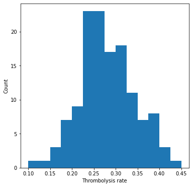

A comparison of 10K cohort thrombolysis rates across hospitals
Contents
A comparison of 10K cohort thrombolysis rates across hospitals#
This notebook compares the expected thrombolysis rate of a 10K cohort across 132 hospitals. The XGBoost model uses 8 features:
S2BrainImagingTime_min
S2StrokeType_Infarction
S2NihssArrival
S1OnsetTimeType_Precise
S2RankinBeforeStroke
StrokeTeam
AFAnticoagulent_Yes
S1OnsetToArrival_min
Aims:#
Train XGBoost model on all data except for a 10K set of patients
Predict use of thrombolysis in 10K cohort at each of 132 hospitals (by changing hospital one-hot coding).
Import libraries#
# Turn warnings off to keep notebook tidy
import warnings
warnings.filterwarnings("ignore")
import matplotlib.pyplot as plt
import os
import pandas as pd
import numpy as np
from sklearn.metrics import auc
from sklearn.metrics import roc_curve
from xgboost import XGBClassifier
Create output folders if needed#
path = './output'
if not os.path.exists(path):
os.makedirs(path)
path = './predictions'
if not os.path.exists(path):
os.makedirs(path)
Load data#
data_loc = '../data/kfold_5fold/'
train_data, test_data = [], []
# Load features (and add S2Thrombolysis)
number_of_features_to_use = 8
key_features = pd.read_csv('./output/feature_selection.csv')
key_features = list(key_features['feature'])[:number_of_features_to_use]
key_features.append('S2Thrombolysis')
for i in range(5):
train = pd.read_csv(data_loc + 'train_{0}.csv'.format(i))
train = train[key_features]
train_data.append(train)
test = pd.read_csv(data_loc + 'test_{0}.csv'.format(i))
test = test[key_features]
test_data.append(test)
Combined XGBoost Model#
Train model#
# Get X and y
X_train = train.drop('S2Thrombolysis', axis=1)
X_test = test.drop('S2Thrombolysis', axis=1)
y_train = train['S2Thrombolysis']
y_test = test['S2Thrombolysis']
# One hot encode hospitals
X_train_hosp = pd.get_dummies(X_train['StrokeTeam'], prefix = 'team')
X_train = pd.concat([X_train, X_train_hosp], axis=1)
X_train.drop('StrokeTeam', axis=1, inplace=True)
X_test_hosp = pd.get_dummies(X_test['StrokeTeam'], prefix = 'team')
X_test = pd.concat([X_test, X_test_hosp], axis=1)
X_test.drop('StrokeTeam', axis=1, inplace=True)
# Define model
model = XGBClassifier(verbosity = 0, seed=42, learning_rate=0.5)
# Fit model
model.fit(X_train, y_train)
# Get predicted probabilities and class
y_probs = model.predict_proba(X_test)[:,1]
y_pred = y_probs > 0.5
# Show accuracy
accuracy = np.mean(y_pred == y_test)
print (f'Accuracy: {accuracy}')
Accuracy: 0.8442392161279423
Pass 10k cohort through all hospital models and get thrombolysis rate#
hospitals = list(set(train['StrokeTeam']))
hospitals.sort()
thrombolysis_rate = []
single_predictions = []
for hospital in hospitals:
# Get test data without thrombolysis hospital or stroke team
X_test_no_hosp = test.drop(['S2Thrombolysis', 'StrokeTeam'], axis=1)
# Copy hospital dataframe and change hospital ID (after setting all to zero)
X_test_adjusted_hospital = X_test_hosp.copy()
X_test_adjusted_hospital.loc[:,:] = 0
team = "team_" + hospital
X_test_adjusted_hospital[team] = 1
X_test_adjusted = pd.concat(
[X_test_no_hosp, X_test_adjusted_hospital], axis=1)
# Get predicted probabilities and class
y_probs = model.predict_proba(X_test_adjusted)[:,1]
y_pred = y_probs > 0.5
thrombolysis_rate.append(y_pred.mean())
# Save predictions
single_predictions.append(y_pred * 1)
Sort by hospital 10K thrombolysis rate.
thrombolysis_by_hosp = pd.DataFrame(index=hospitals)
thrombolysis_by_hosp['Thrombolysis rate'] = thrombolysis_rate
thrombolysis_by_hosp.sort_values(
'Thrombolysis rate', inplace=True, ascending=False)
# Save
thrombolysis_by_hosp.to_csv(
'./output/10k_thrombolysis_rate_by_hosp_key_features.csv', index_label='stroke_team')
Plot thrombolysis rate of 10K cohort at each hospital#
fig = plt.figure(figsize=(6,6))
ax = fig.add_subplot()
ax.hist(thrombolysis_rate, bins=np.arange(0.10, 0.46, 0.025))
ax.set_xlabel('Thrombolysis rate')
ax.set_ylabel('Count')
plt.show()

Show stats#
mean = np.mean(thrombolysis_by_hosp['Thrombolysis rate'])
stdev = np.std(thrombolysis_by_hosp['Thrombolysis rate'])
minimum = np.min(thrombolysis_by_hosp['Thrombolysis rate'])
maximum = np.max(thrombolysis_by_hosp['Thrombolysis rate'])
print (f'Mean: {mean:0.3f}')
print (f'StDev: {stdev:0.3f}')
print (f'Min: {minimum:0.3f}')
print (f'Max{maximum:0.3f}')
Mean: 0.280
StDev: 0.062
Min: 0.101
Max0.447
Observations#
The 10K cohort model had an accuracy of 85.2%, in line with accuracy from k-fold testing.
The predicted thrombolysis use in the 10K cohort of patients ranged from 10% to 45%.